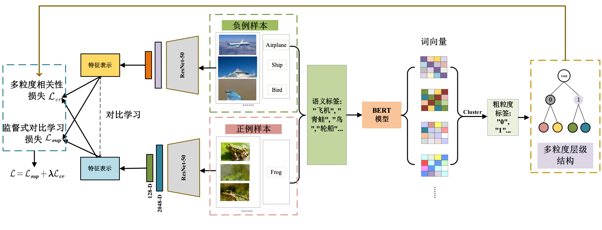

Wang Yu（王煜）
 |
Ph.D., Assistant Research Fellow, |
News!
[2022/04] Greetings! Five new undergraduate students join my team.
[2022/04] "Collaborative decision-reinforced self-supervision for attributed graph clustering" has been accepted by IEEE Transactions on Neural Networks and Learning Systems (TNNLS).
[2022/02] "Latent heterogeneous graph network for incomplete multi-view learning" has been accepted by IEEE Transactions on Multimedia (TMM).
[2021/12] "Uncertainty instructed multi-granularity decision for large-scale hierarchical classification" has been accepted by Information Sciences.
[2021/08] "考虑多粒度类相关性的对比式开放集识别方法" has been accepted by 软件学报.
[2021/07] "Coarse-to-fine: progressive knowledge transfer based multi-task convolutional neural network for intelligent larges-scale fault diagnosis" has been accepted by IEEE Transactions on Neural Networks and Learning Systems (TNNLS).
[2021/06] "A recursive regularization based feature selection framework for hierarchical classification" has been published on IEEE Transactions on Knowledge and Data Engineering (TKDE).
[2021/05] "Get to the point: content classification of animated graphics interchange formats with key-frame attention" has been accepted by IEEE International Conference on Image Processing (ICIP).
[2021/05] I was invited by ChinaDaily to give a talk on "New era of intelligence in Tianjin" for the 5th World Intelligence Congress.
[2021/02] "Hierarchical semantic risk minimization for large-scale classification" has been accepted by IEEE Transactions on Cybernetics (TCYB).
[2021/02] Greetings! Two new master students join my team.
Bio
Wang Yu (王煜) is currently an assistant research fellow at Tianjin University (TJU), China. He received BA, ME, and Ph.D degree from Tianjin University. His supervisor was Prof. Hu Qinghua(胡清华). His researches lie in data mining and machine learning in artificial intelligence, including multi-granularity classification, open-set recognition, incremental learning, and their applications to image classification and fault diagnosis of large-scale machinery. He has published many papers in highly regarded journals and conferences, such as IEEE TFS, IEEE TNNLS, IEEE TCYB, IEEE TKDE, etc.
Call for graduate and undergraduate students! Hope you are hardworking, determined, and have basic programming skills and mathematics knowledge. You can receive detailed supervision on research and would have a promising career. Feel free to contact me via email.
Selected Publications
Journal:
[TNNLS] |
{kind=link}
|  | [软件学报] |
{kind=link}
[TMM] |
{kind=link}
[TNNLS] |
{kind=link}
[TCYB] |
{kind=link}
[TFS] |
{kind=link}
[INS] |
{kind=link}
 |
[中国科学] |
{}{img_left}{indexpicTKDE.png}{alt text}{280}{115}{indexpicTKDE.png}
[TKDE]
A recursive regularization based feature selection framework for hierarchical classification
IEEE Transactions on Knowledge and Data Engineering (2021).
Hong Zhao, Qinghua Hu, Pengfei Zhu, Yu Wang, and Ping Wang.
[Paper]
[PR]
Deep super-class learning for long-tail distributed image classification
Pattern Recognition (2018).
Yucan Zhou, Qinghua Hu, and Yu Wang.
[Paper]
[JMLC]
Self-paced hierarchical metric learning
International Journal of Machine Learning and Cybernetics (2021).
Mohammed Ali Altaezi, Pengfei Zhu, Qinghua Hu, Yu Wang, and Abdulrahman Al-badwi.
[Paper]
Conference:
[ICIP]
Get to the point: content classification of animated graphics interchange formats with key-frame attention
IEEE International Conference on Image Processing (2021).
Yongjuan Ma, Yu Wang*, Pengfei Zhu, Junwen Pan, and Hong Shi.
[Paper] [Code]
[ICDM]
Local Bayes risk minimization based stopping strategy for hierarchical classification
IEEE International Conference on Data Mining (2017, Oral).
Yu Wang, Qinghua Hu, Yucan Zhou, Hong Zhao, Yuhua Qian, and Jiye Liang.
[Paper]
Service
He serves as a reviewer of:
IEEE Transactions on Neural Networks and Learning Systems (TNNLS)
IEEE Transactions on Image Processing (TIP)
IEEE Transactions on Cybernetics (TCYB)
IEEE Internet of Things Journal (IoTJ)
IEEE Conference on Computer Vision and Pattern Recognition (CVPR)
IEEE International Conference on Computer Vision (ICCV)
etc